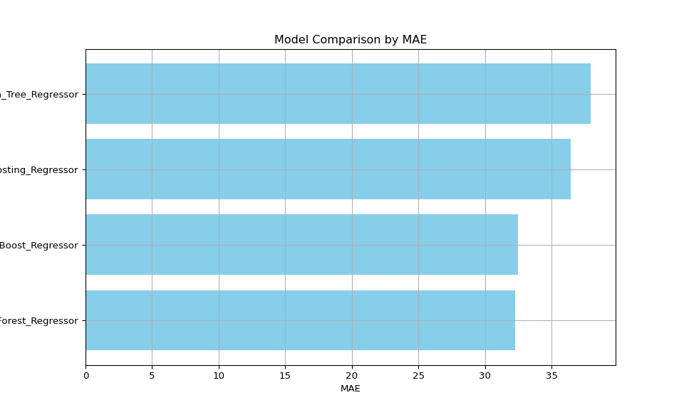
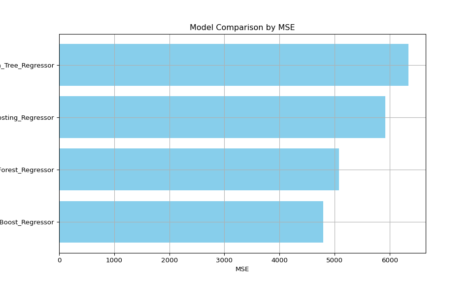
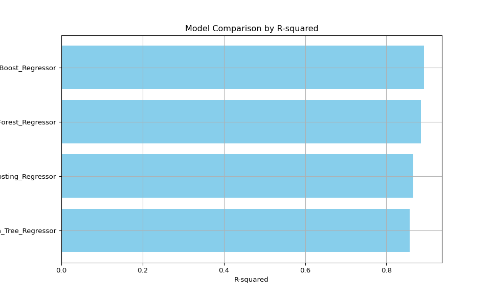
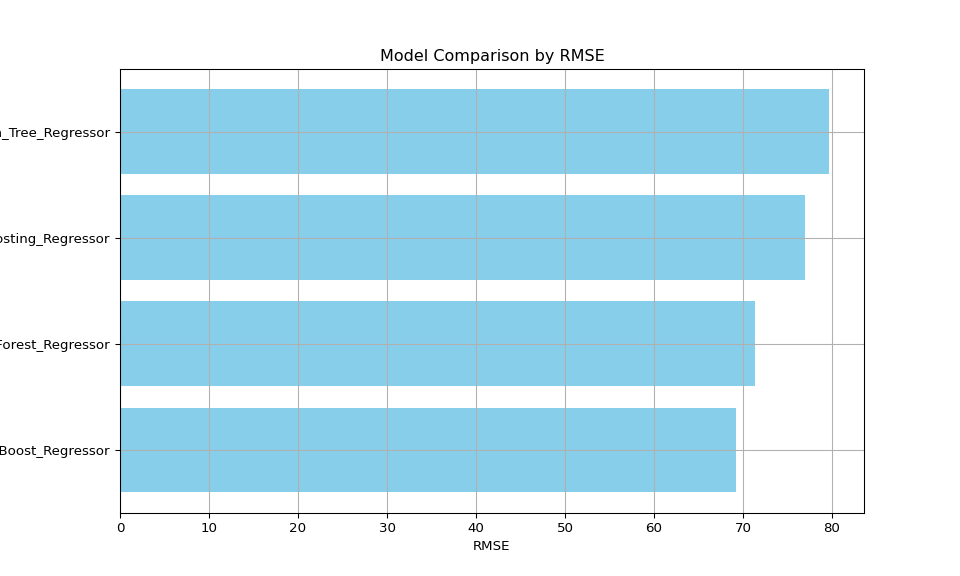

Supplement to Example Manuscript Template for a Data Analysis Project
Overview
An overview of the correct process to generate the final outputs as well as some exploratory analysis.
Code Information
Run analysis in the following order.
Pre-Processing File (Quarto):
/code/processing-code/pre_process_tax_data.qmd - preprocesses the tax/ev data and merges them into one dataset.Exploratory Data Analysis (Quarto):
/code/eda-code/eda-ev-dataset.qmd - exploratory analysis of the electric vehicle dataset
/code/eda-code/eda-ev-tax.qmd - exploratory analysis of the tax datasetPredictive models (Quarto):
/code/analysis-code/statistical_analysis.qmd - builds multiple predictive models, visualizes, and compares them.
Additional Method Details
Decision Tree Regressor:
A basic model that splits the data into subsets based on feature values, creating a tree structure. We set hyperparameters such as the maximum depth and minimum samples per leaf to control the model’s complexity and prevent overfitting.
Random Forest Regressor:
An ensemble learning method that constructs multiple decision trees and aggregates their outputs to improve prediction accuracy. We configured key parameters like the number of trees (n_estimators) and the maximum depth, optimizing for a balance between bias and variance.
XGBoost Regressor:
A gradient boosting model known for its efficiency and performance. XGBoost builds trees sequentially, with each new tree aiming to correct errors made by the previous ones. We fine-tuned parameters such as the learning rate (eta), maximum depth, and regularization terms (lambda and alpha) to enhance model performance.
HistGradientBoosting Regressor:
A histogram-based implementation of gradient boosting that is particularly efficient for large datasets. This model discretizes continuous features into bins, reducing memory usage and speeding up training. We set parameters including the number of iterations (max_iter), learning rate, and number of bins (max_bins) to optimize the model.
Additional results
Log-Transformed Histogram Examples


Log-Transformed Boxplot Examples


Model Comparison - MAE

Model Comparison - MSE

Model Comparison - R-squared

Model Comparison - RMSE

Variable Importance - Decision Tree

Variable Importance - Hist Gradient Boosting
.png)
Variable Importance - Random Forest

References
Jain, A. (n.d.). Electric vehicle population [Data set]. Kaggle. Retrieved June 6, 2024, from https://www.kaggle.com/datasets/jainaru/electric-vehicle-population
Internal Revenue Service. (n.d.). SOI tax stats - Individual income tax statistics - ZIP code data (SOI). Retrieved June 16, 2024, from https://www.irs.gov/statistics/soi-tax-stats-individual-income-tax-statistics-zip-code-data-soi